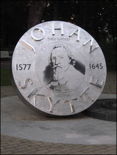

|
История Эстонии должна быть хорошо известна. Она демонстрирует уроки жизненной стойкости, важности культуры и главенства закона. Народ Эстонии боролся многие столетия для того, чтобы выжить, являясь частью восточного побережья Балтийского моря, соседствуя с наиболее сильными странами. Несмотря на её размеры, Эстония всегда находилась на перекрестке истории, являясь частью важнейших событий в Европе. После Первой Мировой Войны Эстония не получила обещанной независимости и была практически забыта, находясь под властью Советского Союза. В 1920 году, когда страна, которая в течение 700 лет находилась под властью таких стран, как Дания, Германия, Швеция, Польша и Россия, получила независимость, это было рассмотрено, как чудо. Затем пришла Вторая Мировая Война и советская оккупация. Эстония была не более чем точка на советской периферии. Но в то же время она являлась желаемой и важной точкой для Сталина, которая давала СССР выход к незамерзающим портам Балтийского моря, а также необходимым каналом для экспорта коммунистической революции.
|
|
| Здание Ратуши |
Ботанический сад Тарту |
В настоящее время это ещё более необыкновенно, что Эстония – независимая европейская страна. Около полувека советского влияния отразились на ней, её народе и культуре намного более негативно, чем все те века влияния других европейских стран.
Начавшиеся в 1972 году эстонские певческие фестивали по всему миру помогали поддерживать культурную идентичность. Сила человеческого голоса, воплощенная в массах, разбудила объединенную нацию Эстонии. Это был политическое и культурное утверждение, которое сплотило эстонцев и вселило в них храбрость для того, чтобы продолжать бороться. Они называют это Певческой Революцией. Эстония всегда являлась страной певцов. Национальные песни задавали особый ритм для жизни и работы.
|
|
| Главное здание Университета |
Фонтан Голова профессора Лотмана
у библиотеки университета |
Летом 1988 года в Старом городе Таллинна проходил концерт, который собрал огромные массы народа на шесть ночей ради того, чтобы петь патриотические песни. Эстонский язык сильно отличается от других европейских языков. Он принадлежит к финно-угорской семье, наравне со шведским, финским, венгерским и другими языками маленьких народов от Уральских гор к Балтике. Эстонские фольклорные песни до 19 века назывались «regivarss». Это было представление, осуществляемое только женщинами с ведущей певицей, которая задавала мелодичную фразу, повторяемую всем хором. Некоторые были плачевные. Другие были ритмичные рабочие песни. Эти песни имели отношение к национальной мифологии, семейной жизни, свадьбе и рождению детей. Этнологи обнаружили, что к 19 веку эстонцы имели наиболее внушительную коллекцию фольклорных песен, чем какие-либо народы Европы. Хоровое пение являлось своего рода религиозным пробуждением наций Латвии и Эстонии.
Основной толчок интереса к фольклорной культуре был поддержан развитием романтизма 19 века. Эстонские ученые-германисты практически создали себе хобби собирать материал про эстонские мифы. Это движение также подтолкнуло Фридриха Роберта Фаельмана и Фридриха Рейнхолда Крутцвалда завершить поэму «Kalevipoeg» – Сын Калева. Это эпическое произведение берет свое начало от финского эпоса – Kalevala, но с добавлением эстонских песен для демонстрации самореализации. Эта поэма и возросший интерес к образованию получили в Эстонии название Национального Пробуждения между 1860–1880. Проводимые в основном деревенской интеллигенцией, в большинстве своем в Южной Эстонии, музыкальные фестивали заряжали эстонскую нацию и внушали людям необходимый оптимизм. В начале 20 века идея эстонской саморешительности возрастала, но нация до сих пор была разделена на административные единицы Российской Империи – северная была Эстонией, южная – Ливония, включая северную часть Латвии. Экономически они были контролируемы балтийскими немцами, которые владели огромными поместьями, в которых эстонцы работали. Больше и больше эстонцев получали образование и уверенность, изучая русский и немецкий, они все же возвращались к родному языку, как первоначальному, который отделял их от двух иностранных культур. «В связи с процветанием песен на эстонском языке, их чувства к национальной идентичности возрастали ещё более интенсивно, и в конце концов превращались в гнев к их второстепенному статусу в своей собственной стране!». В начале века Яан Тыниссон появился в Тарту как национальный политический лидер для века национального пробуждения. Он заявил, что для эстонцев является правильным существовать, как нация, и потому их моральная обязанность – работать ради независимости. Его газета – «Почтальон» («Postimees») стала наиболее влиятельным политическим форумом для национальных инициатив. В Таллинне другой молодой юрист Константин Пятс выпустил другую газету – “Teataja – The Herald”, которая была посвящена экономическим и социальным проблемам, также как и проблемам национальной культуры. Эстонцы были объединены только чувством национального единства, языка, музыки и мифологии, а также личными переживаниями. Леннарт Мери – создатель фильмов и писатель, который стал первым эстонским постсоветским президентом, выбранным свободно, сказал в National Geographic в 1991 году – «Когда вы закрываете людям рот так, что они не могут говорить, когда вы закрываете их глаза, запрещая им путешествовать, когда вы закрываете их уши, закрывая для них эфир, население становится очень пассивным… [и] кажется, что нация реагирует сама: поля производят меньше пшеницы, леса умирают от загрязнения, грязные реки возгораются. Всё общество деградировало. Весь остальной мир развивался далее, но мы пошли назад. Это трагическая разница между Советским Союзом и остальным миром». Весна 1988 года ознаменовалась молодежной революцией, а также резкой сменой музыки с хоровых и фольклорных песен к рок-н-роллу. На популярном музыкальном фестивале в Тарту в мае молодой композитор Ало Маттисен представил его 5 патриотических песен, которые охватывали звуки старых regilaul, также как и патриотические тексты Из Великого Национального Пробуждения 19 века. Балтийская цепь стала влиятельным событием, в котором более миллиона балтов – эстонцев, литовцев и латвийцев – взялись за руки, чтобы создать человеческую цепь, которая протянулась от Таллинна до Вильнуса в Литве. Цепь покрыла примерно 800 миль, это сооружение было показано по телевизору по всему миру, и продемонстрировало балтийскую национальную солидарность в их призыве к независимости! Исландия явилась первой страной, признавшей Эстонию 22 августа 1991 года. Эстония была принята в ООН 17 сентября 1991 года. Эстонцы были первой балтийской нацией, создавшей свою собственную валюту и отказавшиеся от российского рубля. В 2004 году Эстония вошла в НАТО, а затем в Европейский союз, став, наконец, признанной европейской страной. В 1860-х Яков Хурт предположил, что Эстония может привнести в мир больше культурный вклад, чем политический.
|
|
 |
| Памятник Барклаю де Толли |
Табличка на доме в Таллинне |
Памятник Йохану Скитте |
Урмас Нымик говорит, что когда впервые видишь эстонцев, они кажутся тихими и серьезными, но вместе с тем, даже дерзкими. Это первое впечатление возможно из-за того, что на эстонском народе отпечатались следы советского контроля, когда каждый эстонец должен был знать, как правильно вести себя для того, чтобы не быть замеченным властями, знать, что разрешено, а что нет, кому доверять, а кому – нет. Такой постоянный самоконтроль мог явиться причиной высокого уровня суицида и саморазрушительного алкоголизма среди эстонцев. Эстонцы демонстрируют скептицизм по поводу традиционных институтов, таких как церковь и брак. Эстонцы очень расчетливые, они сначала всё обдумают, а потом сделают. Иностранцы, которые впервые знакомятся с эстонцами, могут заметить, что поначалу эстонец с трудом подаст руку для рукопожатия, но, в последствие, вы обретете гостеприимного друга на всю жизнь. Массовые музыкальные фестивали в Таллинне и Тарту демонстрируют, что в отличие от всеобщего мнения, что эстонцы очень индивидуальны, они могут создать удивительную атмосферу, собираясь вместе. Поэтому не стоит полагаться на первое мнение, а подождать немного, чтобы избежать неудобных и комичных ситуаций.
Вот уже второй месяц, как я учусь в Эстонии, в Университете Тарту. Время идет здесь достаточно быстро, но оно так наполнено разнообразными событиями, что не успеваешь замечать ускользающие в прошлое дни. Но, обо всем по порядку.
Итак, конец августа, мы приехали в Тарту. На автовокзале нас встретила моя тьютор (tutor) – такая же студентка, как и мы, приставленная к нам, чтобы помочь обжиться в городе и разрешить все проблемы, касающиеся проживания и обучения.
В этот же день мы пошли в университет в отдел международных связей, чтобы получить необходимую информацию по получению вида на жительство и выбора учебных курсов. Впоследствии мы ещё часто приходили сюда, и нас всегда встречали с готовностью помочь и объяснить все, что поначалу казалось нам сложным. Затем мы посетили ценнейшую библиотеку университета, где зарегистрировали читательские билеты и с помощью беспроводного интернета записались на курсы.
Вскоре состоялся прием у ректора. Всё было так торжественно. Празднество было устроено в здании исторического музея университета. Ректор Алар Карис произнес поздравительную речь, затем последовали выступления музыкантов и банкет, студенты активно стали знакомиться друг с другом. Это была замечательная возможность начать практиковать свой английский. Мы не заметили, как быстро влились во всеобщую атмосферу. Через день начинались занятия. Мы волновались, что будет тяжело сначала понимать лекции на английском по различным профильным предметам, но преподаватели говорили четко, давая детальные разъяснения, так что вскоре наши сомнения рассеялись. Одним из предметов, которые выбрала я, является эстонский язык. С первого же занятия я поняла, что не прогадала. Моя преподавательница – Анника умеет сделать так, чтобы урок прошел занимательно и результативно. По первому же тесту, который был в начале октября, я получила 100 баллов.
Ещё одним нововведением Эстонии является повсеместное использование интернета. Даже на ратушной площади люди сидят с ноутбуками и пользуются бесплатным беспроводным интернетом. Обо всех событиях нам приходят уведомления на электронную почту. Преподаватели присылают наши учебные материалы и задания на специально отведенный для этого сайт университета. Они пишут на электронную почту об изменениях в расписании, о дополнительных заданиях, о конференциях и даже о том, что они больны, и занятие переносится. Это очень удобно. Кроме всего этого мне очень нравится использование различных дополнительных наглядных материалов на уроках. Начиная от презентаций лекций в Power Point с использованием ссылок на научные сайты и заканчивая показом фильмов на изучаемом языке (иногда с английскими субтитрами) и клипов из Youtube.
Кроме занятий, преподаватели и лидеры из организации Erasmus Student Network постоянно присылают приглашения на разнообразные образовательные и развлекательные проекты. Мы ходили на эстонский национальный вечер, где нас знакомили с культурой и историей Эстонии, концерт национальных песен. Также, 2 недели назад, ESN проводила показ исторического фильма на эстонском языке с английскими субтитрами о том, как во времена Советского Союза Эстония боролась за право смотреть не только советское, но и финское и другое зарубежное телевидение. Моя преподавательница по испанскому языку организовала киноклуб, который проходит каждый вторник. Здесь мы смотрим фильмы на испанском с английскими субтитрами (иногда без них) на различные тематики. Это очень помогает в изучении языка и расширении лексикона.
А для развлечения университет организует разнообразные поездки по городам и достопримечательностям Эстонии на выходных по приемлемой для студентов цене. Так мы уже были в Таллинне и Калласте – небольшой русскоязычной деревушке на берегу Чудского озера. Вскоре будет организована поездка в Нарву.
Вот и всё самое основное пока. Кажется, осталось ещё много времени, но это не так. И уже совсем не хочется уезжать обратно. Здесь все стало таким родным, новые друзья, университет… Но всё когда-нибудь меняется и нужно просто жить и наслаждаться каждым мгновением своего существования! А потому, всё ещё впереди.
Бельвебер Кристина
|